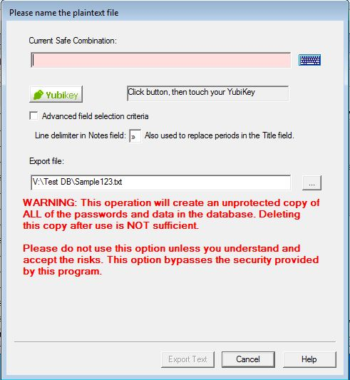

Password Safe supports exporting (and importing) of the stored passwords to (and from) various formats. To export password entries use the "File → Export To" menu. The supported formats are:
For previous versions of Password Safe, just select the desired format and specify the name of the database file you wish to create.
In addition, to 'export' a subset of entries to another Password Safe database, just start Password Safe (assuming you permit multiple instances via "Manage → Options → System" tab) and create a new database, whilst having your normal database open in another instance. Then you can simply drag and drop any entries or groups from your open database to this 'export' database.
Export uses a Wizard interface. You may also select the Advanced field selection in order to restrict which entries you export and which field of these entries you export from your current database. See here for more details.
A report of the actions taken will be available on completion and this may be copied to the clipboard or saved to disk as a text file in the same directory as the database. The "View → Reports" menu item may then be used to view the reports at a later date. The name of the report file is fixed and dependent on the function that created it. If the same function is repeated and its report saved to disk, any existing report for this function will be overwritten. Note: The report may contain sensitive data and care should be taken when selecting the "save to disk" option.
Password Safe allows you to export password entries to text files. These files may then be used or modified by other applications.
You will be asked to enter the master password (safe combination) to confirm that you may export the database into a clear text unencrypted file before you can export its contents. If you're using YubiKey authentication, click on the Yubikey button, then activate your YubiKey. You will also be required to supply the name of the new file and to confirm overwriting of it if a file of the same name if it already exists in the directory you specified.
Note: If you do not have a YubiKey, the screen shown above will not have the YubiKey button and text displayed.
You can also specify some options:
Selecting "Advanced field selection" will display this Wizard page to allow you to export only some of the entries, based on the text in specified fields, and/or specify which fields are to be exported. See here for more details.
XML (eXtensible Markup Language) is a popular format for transferring data between applications. Password Safe can export (and import) the database entries to this format. The structure (or schema) against which the data is exported and validated is defined in the file pwsafe.xsd, which is provided as part of the distribution. This file is used by Password Safe when XML data is imported, and should be provided to applications that wish to use the exported data.
The display of XML files is specified by pwsafe.xsl - an eXtensible Stylesheet Language file. A sample file, which may be modified for your own needs, is supplied as part of the distribution. This file is only an example and you can easily modify it to display whatever fields you want to show. As this only displays the data and will not alter it, you will still be able to import it into Password Safe at some later time.
As in the Text Export option, you can control what entries and field to export to the XML file by selecting the "Advanced field selection". This will display the following Wizard page:

Selecting "Advanced field selection" will display this Wizard page to allow you to export only some of the entries, based on the text in specified fields, and/or specify which fields are to be exported. Note: that the XML schema requires the Title and Password fields, hence these cannot be deselected. See here for more details.
It is also possible to export a single entry or the members of a group to Plain Text, XML or to a current version of a Password Safe. In this case, right-click on the entry of group and select the form of output from the "Export Entry To" or "Export Group To" menu.
For Text and XML export, the options available are exactly the same as exporting the complete database above.
Lastly, if a filter is active, it is possible to export the entries that satisfy this filter to a current version of a Password Safe. This can also be found on the main "Export To" menu off the File menu.
Notes: